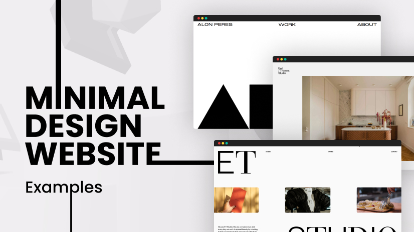

What is Minimalist Design?
Minimalist web design is a style that focuses on simplicity, clean layouts, and essential elements. It removes unnecessary distractions to create a seamless user experience.
Source: Web FX
5 Professional Sites Using Minimalism
- Apple - Uses whitespace, simple typography, and elegant design.
- Tesla - Focuses on bold imagery and clean navigation.
- Nike - Utilizes high-quality visuals with minimal text.
- Squarespace - Prioritizes simplicity and clean aesthetics.
- Muji - A balance of whitespace and functional design.
5 Designers/Companies Using Minimalism
- Dieter Rams - Pioneer of minimalist product and web design.
- Jonathan Ive - Former Apple designer known for sleek minimalism.
- Pentagram - A leading design studio using clean aesthetics.
- Massimo Vignelli - Known for grid-based minimalist layouts.
- Made by Folk - A studio emphasizing clarity and simplicity.
Sources: 99Designs